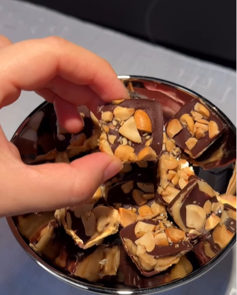

...Çikolata Küpleri...
Çikolatalı ve şam fıstıklı tadımlık lezzetler... Yalnızca 4 malzeme ile hazırlanan çikolata küpleri, renkli kağıtlarda veya kürda batırılarak servis edilir. Özellikle kalabalık sofralarda yer alan çikolata küpleri, doğum günü gibi özel etkinliklerde de sunulabilir.
Tarif: Ayşe Tekgöz
Kaç kişilik: 4 || Hazırlanma süresi: 30dk || Pişirme süresi: 10dk
Çikolata Küpleri Tarifi İçin Malzemeler:
- 350 gr bitter çikolata
- 150 ml krema
- 1 yemek kaşığı tereyağı
- 150 gr şamfıstık(Badem veya fındık da olabilir)
Çikolata Küpleri Nasıl Yapılır?
- Bitter çikolatayı benmari usulü eritin.
- Eriyen çikolatanın üstüne krema ve teryağını ekleyip iyice karıştırıp tencereyi bir tezgaha alın.
- şamfıstıkları havanda çok az dövüp irili ufaklı parçalara bölün.
- Ufalanan parçaları çikolata karışımına ekleyip karıştırın.
- Hazırladığınız çikolatayı varsa alüminyum hazır bir kare tepsiye, yoksa kenarlarından taşarak yağlı kağıt yerleştirdiğimiz küçük bir tepsiye dökün.
- Buzdolabında 2 saat bekletin.
- Çikolatayı kalıptan çıkartın ve kare parçalara bölün.
Afiyet olsun...
